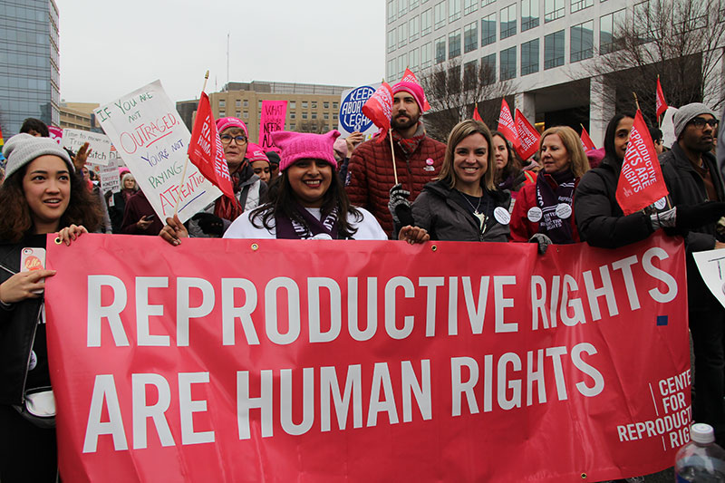
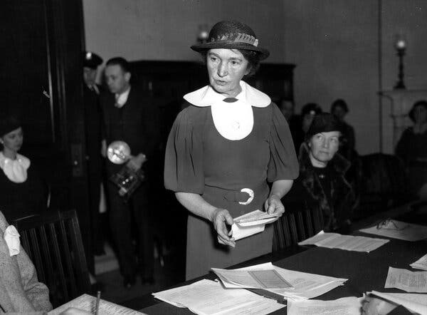
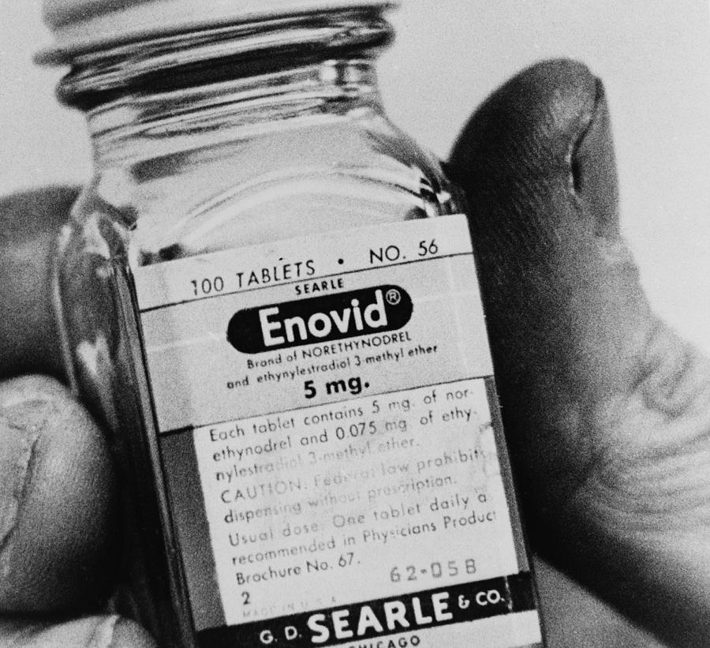
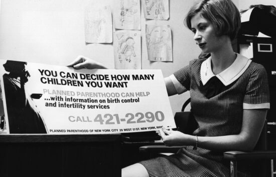
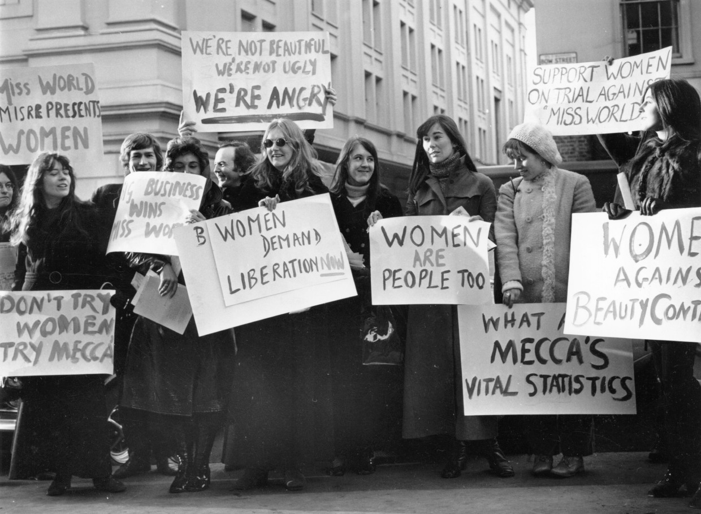
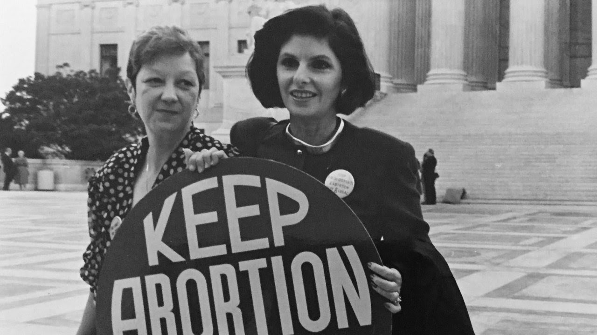
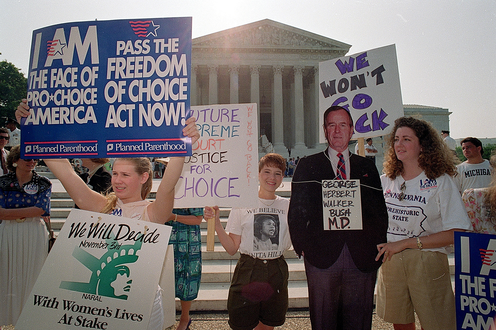
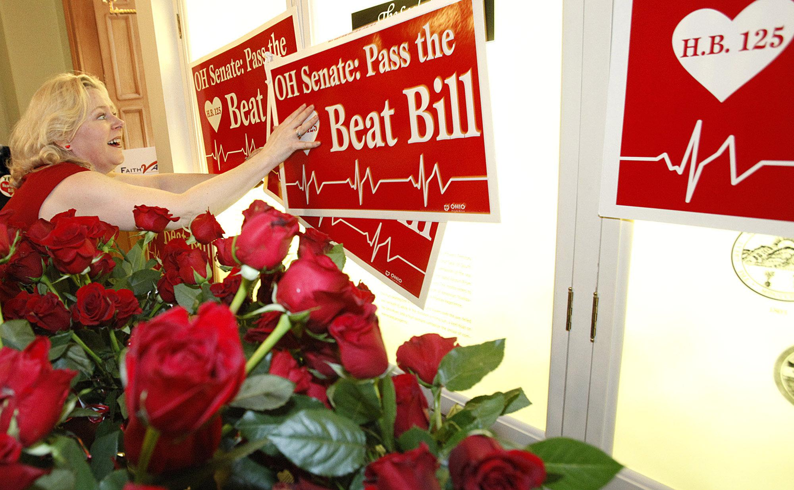

“Reproductive rights rest on the recognition of the basic right of all couples and individuals to decide freely and responsibly the number, spacing and timing of their children and to have the information and means to do so, and the right to attain the highest standard of sexual and reproductive health. They also include the right of all to make decisions concerning reproduction free of discrimination, coercion and violence.” - World Health Organization
Margaret Sanger and Mary Ware Dennett are known as the pioneers of the Women’s Reproductive Rights movement. Margaret Sanger was an activist for birth control and sexual education in the early 1900s. She founded the American Birth Control League, which later became Planned Parenthood. Mary Ware Dennett co founded the ABCL with Sanger and was also an advocate for sex education and women’s suffrage. The efforts of these two women led to birth control being an option for future generations and paved the way for more changes to come.
The first ever birth control pill, Enovid, was approved by the FDA in 1960. However, it was not met without backlash. The pill was quickly banned by multiple religious organizations as well as several states. Enovid was not only banned for single women, but for married couples as well. In order for the pill to be accessible, the Supreme Court had to be invovled.
The Griswold v. Connecticut case ruled that married couples have a constitutional right to privacy regarding their decisions to have children. Because of this, it was decided that states banning their access to contraceptives was indeed constitutional. As a result, Enovid became accessible for married couples. The ruling of Griswold v. Connecticut facilitated many of the reproductive privacy freedoms in place in the U.S. today. It also gave way to Roe v. Wade in 1973.
As women’s reproductive rights became more of a discussion, women’s sexuality gained more societal attention. The sexual revolution took place in the late 1960s. At the core of the movement was the principle that women have sexual desires as men do, so they should also have the same sexual freedoms. Eventually, societal emphasis on women’s virginity and celibacy was replaced with the celebration of single life and exploring sexuality. In a few short years, the biggest court case in the history of reproductive rights would take stage.
In 1973, the case of Roe v. Wade was battled out in the Supreme Court. Roe v. Wade challenged a Texas law prohibiting all abortions, expect in cases where the mother’s life was at stake. As a result of the case, the law was invalidated on the grounds that a woman’s constitutional right to privacy included her decision to terminate a pregnancy. Roe v. Wade resulted in abortion being legalized nationwide. This case also made possible safer and more accesible abortions. It set the standard for all future court cases involving abortions and greatly mirrored the cultural shift in the U.S.
In 1989, the American Civil Liberties Union defended against the overruling of Roe v. Wade by the Supreme Court during Planned Parenthood v. Casey. While the court preserved the constitutional protection of the right to choose, they also adopted the Undue Burden Test. Consequently, the Undue Burden Test allowed state governments to surpass the constitutional ruling as long as they did not place a “substantial obstacle in the path of the woman seeking an abortion of a nonviable fetus”. In other words, states were granted a loophole to define "nonviable fetus" in their own terms.
Since the Planned Parenthood v. Casey ruling, individual have the power to control and reduce abortions and how accesible they are in each state. States can now also enforce “trigger laws”, which would make abortion illegal within the first second trimesters if Roe v. Wade was to be overturned. A recent example of this would be the Heartbeat Bill, which makes abortion illegal as soon as the fetal heartbeat is detected.
